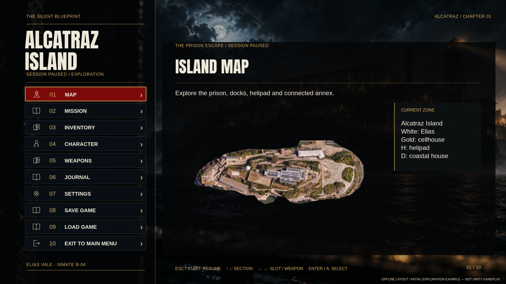
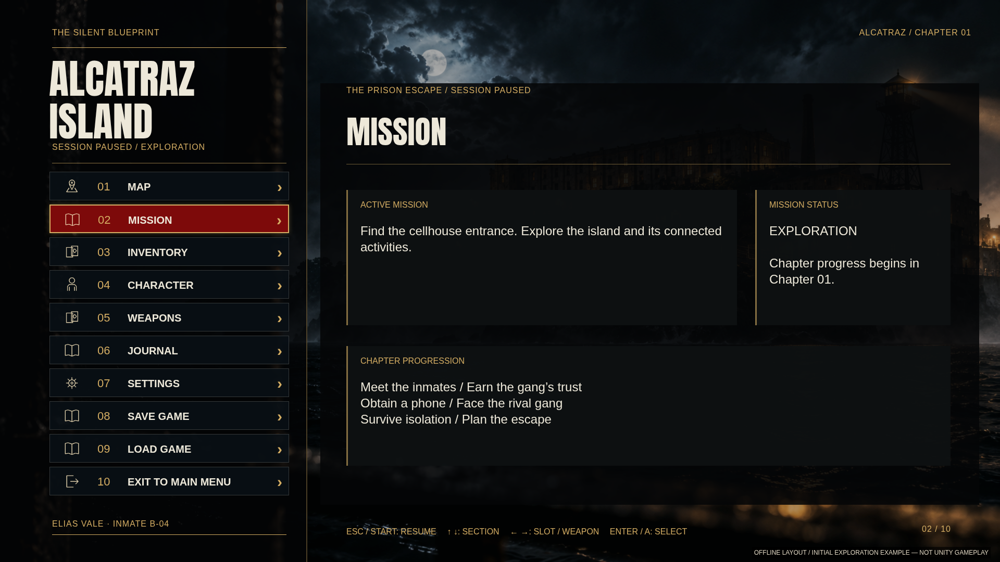
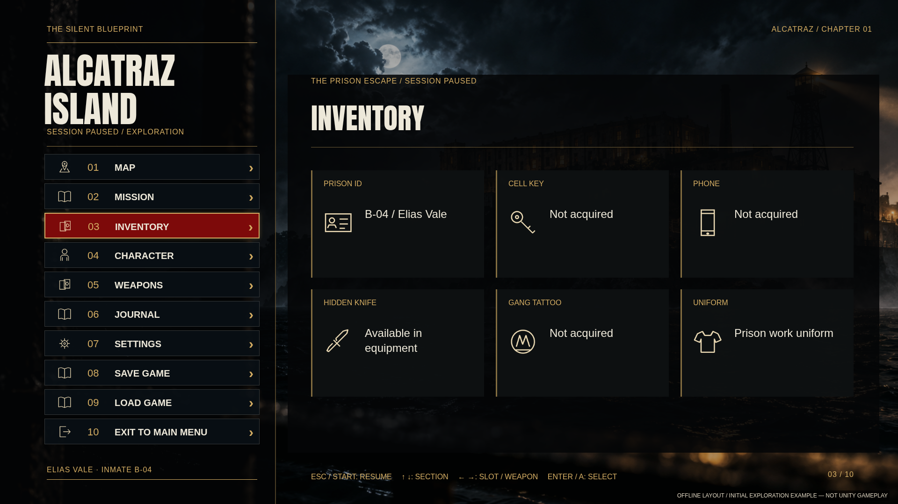
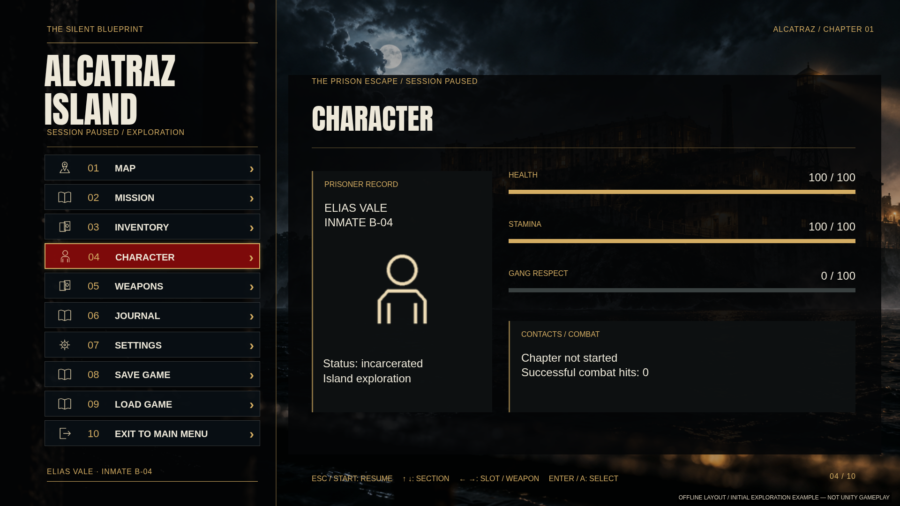
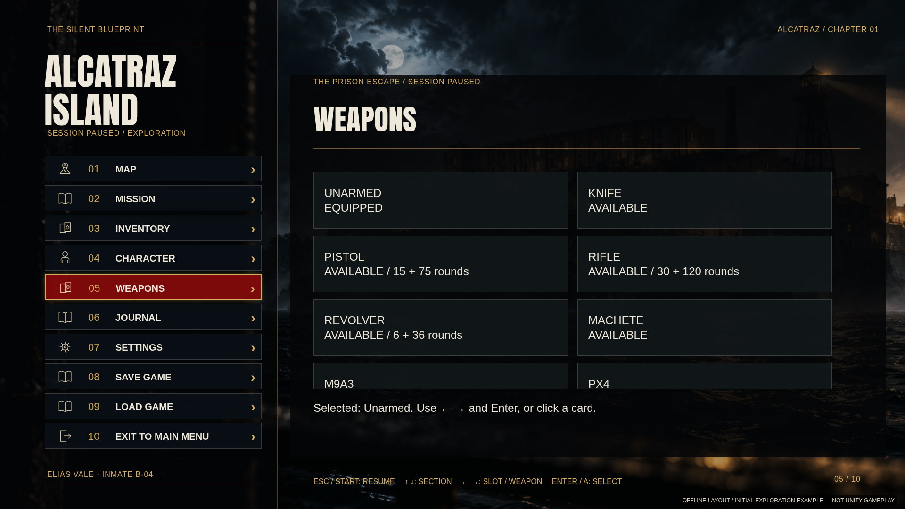
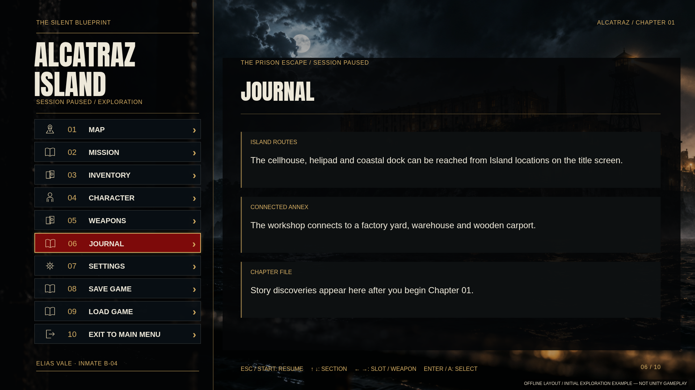
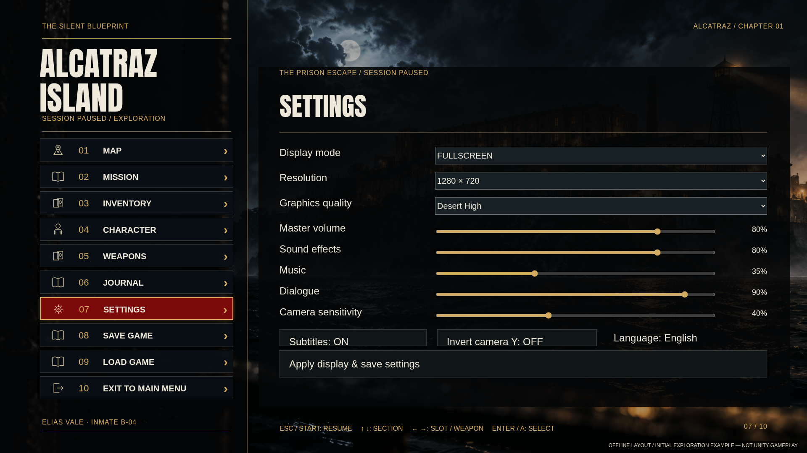
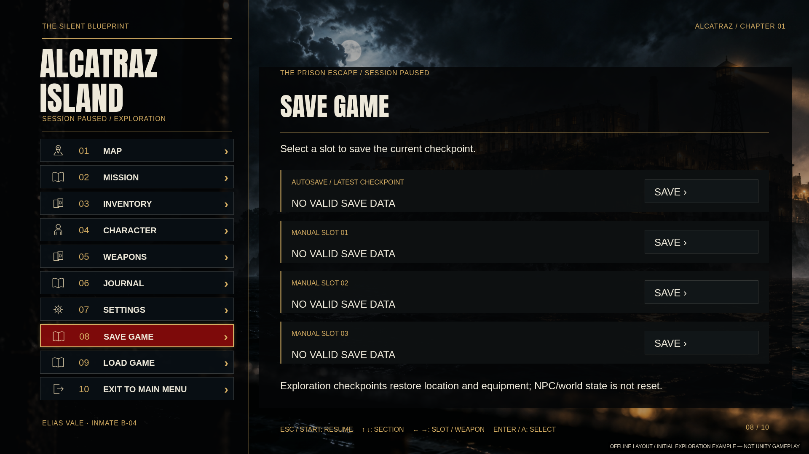
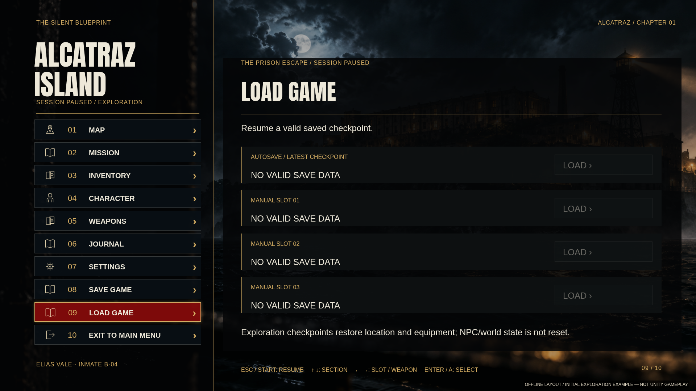
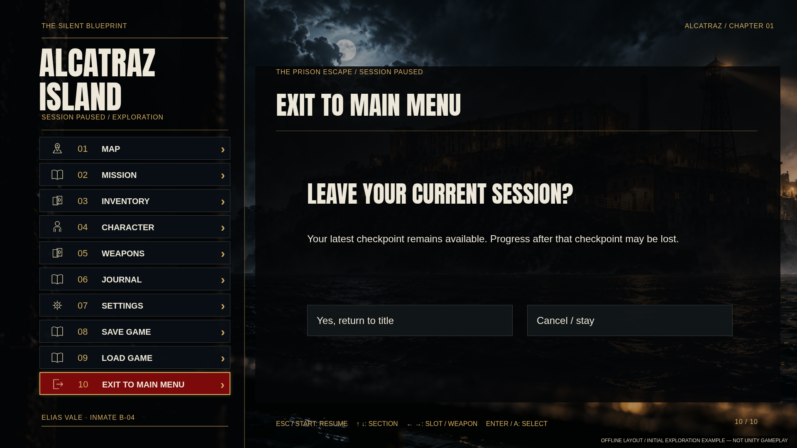

All ten menu sections — offline previews01 / Map

02 / Mission

03 / Inventory

04 / Character

05 / Weapons

06 / Journal

07 / Settings

08 / Save Game

09 / Load Game

10 / Exit to Main Menu
